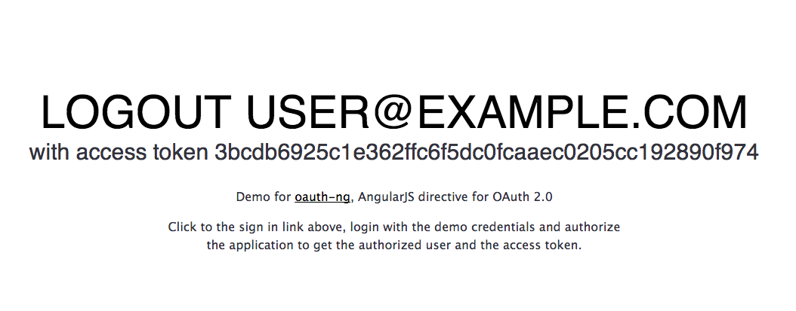

Introduction
Create AngularJS apps that connects to any OAuth 2.0 server using the client side flow (aka OAuth 2.0 Implicit Grant)
Create AngularJS apps that connects to any OAuth 2.0 server using the client side flow (aka OAuth 2.0 Implicit Grant)
Install oauth-ng using Bower
$ bower install oauth-ng --saveThis example shows you how the directive works.
<body ng-app="app">
<oauth
site="OAUTH_SERVER_URI_HERE"
client-id="CLIENT_ID_HERE"
redirect-uri="REDIRECT_URI_HERE"
profile-uri="PROFILE_URI_HERE"
scope="SCOPE_HERE">
</oauth>
<script>angular.module('app', ['oauth']);</script>
</body> To fully understand how it works read the next section.
It renders a Login link that lets you authorize a third party app through OAuth 2.0. When the flow is completed, the access token is saved in the SessionStorage.
In this section you will learn how to use the directive to authorize an OAuth 2.0 server through the creation of a real project. It will take less than 10 minutues.
To build our app we'll use Yeoman, a collection of tools and frameworks helping developers to quickly build web applications.
With a recent version of Node.js installed, install the yo package.
In this way you have Yo, Grunt and Bower and can run them directly from the command-line.
$ npm install -g yoWith Yeoman you can install additional generators with npm. For this tutorial you need to install the AngularJS generator.
$ npm install -g generator-angularTo begin, go to the terminal, make a new directory and cd into it.
$ mkdir new-project && cd $_You can now kick-start your AngularJS app.
$ yo angularIt will also ask you if you would like to include Twitter Bootstrap and other stuff. Once you've decided, just hit Enter. It will take a while to complete.
To preview what the app looks like run the serve command.
$ grunt serveThe server supports LiveReload, meaning you can fire up a text editor, edit a custom element and the browser will reload on save.
Install oauth-ng using Bower.
$ bower install oauth-ng --save
Now you have oauth-ng and all its dependencies ready to be used.
Restart the server to automatically add them to your index page.
$ grunt serveThe setup is now completed.
Inject the oauth-ng module into your application.
// app/scripts/app.js
angular.module('newProjectApp', ['oauth', ... ]) Activate the HTML5 mode to catch the access token.
// app/scripts/app.js
angular.module('newProjectApp').config(function($locationProvider) {
$locationProvider.html5Mode(true).hashPrefix('!');
});
To test the directive we created a basic OAuth 2.0 authorization server at the address
http://oauth-ng-server.herokuapp.com.
To make the directive work you need a registered application to get its
client-id and redirect-uri. For this example we
created a demo app with the following credentials.
Open your main.html view and place the oauth tag with the needed configurations.
<oauth
site="http://oauth-ng-server.herokuapp.com"
client-id="d6d2b510d18471d2e22aa202216e86c42beac80f9a6ac2da505dcb79c7b2fd99"
redirect-uri="http://localhost:9000"
profile-uri="http://oauth-ng-server.herokuapp.com/api/v1/me"
scope="public">
</oauth> Here a description for what these settings are about.
| site | OAuth 2.0 authorization server URI. |
| client-id | Registered Client ID. |
| redirect-uri |
Registered application URI. Where the user is redirected after the authorization. |
| profile-uri | API endpoint to get the authenticated profile resource. |
| scope | Application privileges. |
Open your index page, click to the Login link and authorize your application to get a new access token. You are now ready to access your API using OAuth 2.0 and AngularJS.
The oauth directive works just straight when the HTML5 mode is active.
<script>
angular.module('app').config(function($locationProvider) {
$locationProvider.html5Mode(true).hashPrefix('!');
});</script> When the HTML5 mode is off (default setup on AngularJS) add the following snippet of code to your routing provider.
angular.module('app').config(function ($routeProvider) {
$routeProvider
.when('/access_token=:accessToken', {
template: '',
controller: function ($location, AccessToken) {
var hash = $location.path().substr(1);
AccessToken.setTokenFromString(hash);
$location.path('/');
$location.replace();
}
})
...
This code is needed because the fragment that the OAuth 2.0 server returns is recognized
as the routing path /access_token. For this reason you need to add a routing
rule catching the access token, parse it and then redirect to the desired view of your app.
The directive accepts the following attributes.
| site required | A string that represents the authorization endpoint. |
| client-id required | Registered Client ID. |
| redirect-uri required | Registered application URI where the user is redirected after the authorization. |
| scope optional | Application privileges. |
| profile-uri optional | API endpoint returning the authenticated profile resource. |
| state optional | An arbitrary unique string created by your app to guard against Cross-site Request Forgery. |
| template optional |
Custom template you want to render. Default to default.html.
|
| authorize-path optional |
Authorization URL for the OAuth2 Implicit Flow. Default to /oauth/authorize.
|
| text optional |
Visible text when the user has to login. Default to Sign in.
|
| storage (optional) |
How the token is stored locally,localStorage or sessionStorage.Defaults to sessionStorage.
|
The oauth directive comes to life with customization in mind. You can easily define personalized CSS styles or create brand new templates.
By default the directive is shown as a simple link. To improve its visual style add some CSS rules.
| Default | (no extra CSS required) |
| Logged out |
Sign In |
| Logged in | Logout Alice |
| Access denied | Access denied. Try again. |
| Blue button style | <Download CSS> |
| Logged out | Sign In |
| Logged in |
Logout Alice |
| Access denied | Access denied. Try again. |
All CSS rules applies to the following HTML structure.
<span class="oauth">
<a href="#" class="logged-out">Sign In</a>
<a href="#" class="logged-in">Logout Alice</a>
<a href="#" class="denied">Access denied. Try again.</a>
</span>
It's easy to create your own. Base all of your rules on the oauth class
or checkout existing CSS definitions to better understand how it works
(e.g. the blue button CSS).
Mail or Tweet me if you make new CSS buttons so that we can add them do the docs.
When the custom template does not satisfy your needs (e.g. you want to show the user email when logged in), you can create a new one. To have an idea of what a template looks like, see the code below (related to the default template).
<span class="oauth">
<a href="#" class="logged-out" ng-show="show=='logged-out'" ng-click="login()">{{text}}</a>
<a href="#" class="logged-in" ng-show="show=='logged-in'" ng-click="logout()">Logout {{profile.email}}</a>
<a href="#" class="denied" ng-show="show=='denied'" ng-click="login()">Access denied. Try again.</a>
</span> To create your new template, define the HTML and make it work using the following internal API.
| show variable |
Defines the oauth status. Valid values are logged-out, logged-in and denied.
|
| text variable |
Visible text when the widget is logged out. Default to Sign in.
|
| login() method | Logs in redirecting the app to the OAuth 2.0 authorization server. |
| logout() method | Logs out deleting the access token. |
Now, supposing you have defined a new template in views/templates/custom.html,
you need to let the directive know about its existence. You can do this in two ways.
Set the template path (or uri) as value for the template attribute.
<oauth
template="views/templates/custom.html"
client-id="<client-id>"
redirect-uri="<redirect-uri>"
profile-uri="<profile-uri>"
scope="<your-scope>">
</oauth> Fires the update template event passing the template path (or uri) as param.
$rootScope.$broadcast('oauth:template:update', 'views/templates/custom.html'); Use this solution when you need to update the directive at runtime. For all other cases, use the template attribute.
The events related to the oauth directive are the following.
| oauth:login(token) fired | Fired when the user has completed the login flow, and authorized the third party app. |
| oauth:authorized(token) fired | Fired when the view is initializing and user has a non-expired auth token in the local session storage. |
| oauth:logout fired | Fired when the user logs out. |
| oauth:loggedOut fired | Fired when the user is not logged in. |
| oauth:denied fired | Fired when the user denies the access to the third party app. |
| oauth:expired fired | Fired when the access token is expired. |
| oauth:template:update(uri) listening |
Listening for runtime the template change. See examples in the customization section. |
| oauth:profile(profile) fired |
Fired when the profile data has been retrieved. Does not fire if there is no profile-uri parameter.
|
Here some examples.
$scope.$on('oauth:login', function(event, token) {
console.log('Authorized third party app with token', token.access_token);
});
$scope.$on('oauth:logout', function(event) {
console.log('The user has signed out');
});
$scope.$on('oauth:loggedOut', function(event) {
console.log('The user is not signed in');
});
$scope.$on('oauth:denied', function(event) {
console.log('The user did not authorize the third party app');
});
$scope.$on('oauth:expired', function(event) {
console.log('The access token is expired. Please refresh.');
});
$scope.$on('oauth:profile', function(profile) {
console.log('User profile data retrieved: ', profile);
});
Inject the AccessToken.get() service to understand if the user is logged in or out.
$timeout(function() {
$scope.logged = !!AccessToken.get();
}, 0)
The AccessToken.get() method returns null when the user is logged
out and the access token representation when the user is logged in (see below).
{
"access_token": "9ce03e06f037180c2dcfa8b278217eb56d747730c69xxx",
"token_type": "bearer",
"expires_in": 7200,
"state": "remember-me"
}
When a user signs in, the profile is accessible through the Profile service.
$scope.profile = Profile.get();
This profile is accessible only when the profile-uri attribute is defined and
it sets the Authorization header with the access token to authenticate the request.
Authorization:Bearer {token}